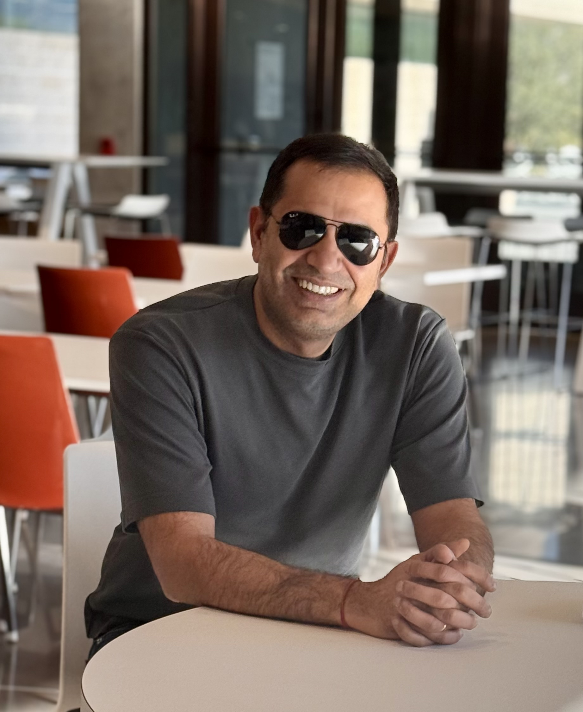

Ravi Tandon

Ravi Tandon is a Professor and the Craig M. Berge Faculty Fellow in the School of Electrical, Computing, and Software Engineering at the University of Arizona. He is also the Associate Director for AI in Engineering at the University of Arizona. He received his B.Tech. in Electrical Engineering from the Indian Institute of Technology Kanpur in 2004 and his Ph.D. in Electrical and Computer Engineering from the University of Maryland, College Park in 2010. He was a postdoctoral research associate at Princeton University from 2010 to 2012.
His research interests span trustworthy AI, privacy and security, efficient AI systems, and information theory. He is a recipient of the NSF CAREER Award, the Keysight Early Career Professor Award, and a Best Paper Award at IEEE Globecom. He has served as an Associate Editor for IEEE Transactions on Information Theory, IEEE Transactions on Wireless Communications, and IEEE Transactions on Communications.